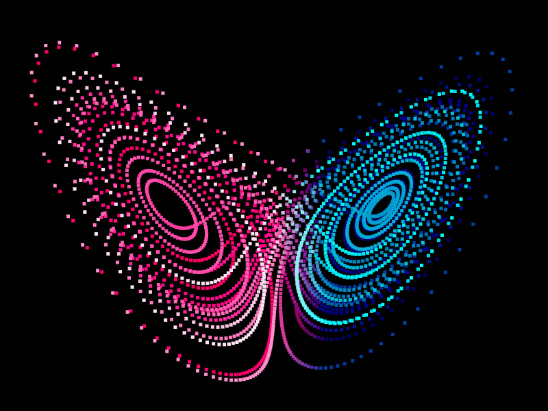

While not meant to be taken literally, this metaphor captures the essence of chaos theory: small changes in the initial conditions of a system can lead to large and unpredictable outcomes. This idea, often referred to as the butterfly effect, lies at the heart of chaos theory and highlights the sensitive dependence on initial conditions seen in many natural and mathematical systems.
Chaos Theory states that within the apparent randomness of chaotic, complex systems, there are underlying patterns, interconnectedness, constant feedback loops, repetition, self-similarity, fractals, and self-organization. In simple terms, even though these systems may appear unpredictable, they follow deeper rules. Small changes in initial conditions can lead to drastically different outcomes as time progresses, making long-term prediction extremely difficult.
One common example of a chaotic system is a double pendulum. A double pendulum’s position can be found using deterministic equations. When given a set of initial values, we can predict where it will be at any given time. So why is it an example of a chaotic system? A double pendulum is an example of deterministic chaos. We would be able to calculate its position if we had precise data, but that can be hard to come by. The position of the double pendulum is extremely sensitive, and a change in significant figures can completely change its trajectory. This can be shown in the double pendulum at the top of the article (you can refresh the page to reset the simulation). Ten pendulums are displayed, with the only difference is each theta value increases by 0.001º. Within a few seconds we see that all the pendulums break off into completely different pathways. A quote that describes this well comes from Edward Lorenz, a mathematician that laid the foundations of chaos theory:
The idea of Chaos Theory stems from the previously mentioned mathematician and meteorologist Edward Lorenz in the 1960s. Throughout his work as a meteorologist, he came to the conclusion that weather patterns are nonlinear and can be volatile. This was enforced when one day he decided to go back and recreate a past weather sequence. When he initially made the calculations a year prior, he used six significant figures, but when running through them again he used three. One would expect this decimal change to be insignificant, but that was far from the truth. The two weather sequences were vastly different, showing that seemingly negligible factors can completely change outcomes (Halton).
Lorenz is well known for the famous Lorenz Attractor, a model often associated with the Butterfly Effect, appropriately named because its shape resembles a butterfly. What makes this set of equations notable is its extreme sensitivity to initial conditions.
The three differential equations are:
x' = σ(y - x)
y' = x(ρ - z) - y
z' = xy - ßz
The values σ (sigma), ρ (rho), and ß (beta), are constants that can be changed, but picking random numbers will likely result in the particles flying towards infinity. The most common constants, picked by Lorenz himself are:
σ = 10
ρ = 28
ß = 8/3
Starting from an arbitrary point, future points are calculated based on the previous. It is important to note that not all inputs in this equation result in a chaotic output. For example, having initial values (0,0,0) will result in all derivatives equaling 0. The point will forever stay at the origin. On the flip side, inputting large values will result in the particle shooting towards infinity. The most interesting behavior happens when we pick starting points in a certain "sweet spot."
As part of my research, I programmed a 3D model of the Lorenz Attractor, viewable through the button above. I initialized the point at (0.01, 0, 0) to ensure non zero derivatives and a true chaotic attractor.
What’s fascinating about this model is that the trajectory never exactly retraces its steps. If it did, the motion would no longer be chaotic; it would become periodic or predictable. Even more interestingly, if we start 100 points close together, some will diverge to infinity, and some will stay trapped in the attractor’s general shape. Even though they follow similar patterns, no two paths are identical. A tiny difference in starting points leads to drastically different futures (Kastorf).

The orientation of a double pendulum can be shown on the right. When doing calculations, we have several variables we will be working with:
L1: Length of the first string
L2: Length of the second string
Θ1: The angle between L1 and a line perpendicular to the ground
Θ2: The angle between L2 and a line perpendicular to the ground
m1: mass of the first ball
m2: mass of the second ball
We can also state that the location of the first ball is (x1,y1) and the location of the second ball is (x2, y2). The point the pendulum is hanging from is (x0,y0). We are also going to assume that x0, y0 = 0 (this part is more important when programming it). Using basic trigonometry, we are able to write these points as the following:
x1 = L1sinΘ1
y1 = -L1cosΘ1
x2 = x1 + L2sinΘ2
y2 = y1 - L2cosΘ2
Now we will need the derivatives of each coordinate. Derivative is denoted with an apostrophe:
x1’ = L1cosΘ1
y1’ = L1sinΘ1
x2’ = x1’ + L2cosΘ2
y2’ = y1’ + L2sinΘ2
In order to calculate the change in the Θ values, we are going to be using a Lagrangian. The Lagrangian describes a system in terms of its kinetic and potential energy, and is founded on the principle of least action. The formula for the Lagrangian is written as:
L = T - V
In words, the Lagrangian equals the kinetic energy (T) minus the potential energy (V) within the system. This means the next step is to solve for T and V:
T = 1/2m1(x1'2+y1'2) + 1/2m2(x2'2+y2'2)
Simplify.
T = 1/2ML12Θ12 + 1/2m2 L22Θ22∆Θ
where M = m1 + m2 and ∆Θ = Θ1 - Θ2
V = m1gy1 + m2gy2
This reduces to:
V = -MgL1cosΘ1 - m2gL2cosΘ2
Now lets sub this information into the Lagrangian (L = T - V):
L = 1/2ML12Θ1'2+ 1/2m2L22Θ2'2+ m2L2L2Θ1'Θ2'cos∆Θ+MgL1cosΘ1 + m2gL2cosΘ2
We will now apply the Euler-Lagrange equations with respect to Θ1 and Θ2. This will allow us to get the angular acceleration. This equation will be one of the most important components of the program.
ML1Θ1'' + m2L2Θ2''cos∆Θ+m2L2Θ'2sin∆Θ+MgsinΘ1 = 0
L1Θ1''cos∆Θ+L2Θ2''-L1Θ12sin∆Θ+gsinΘ2=0
These equations cannot be solved like a linear equation. We can break it down by setting m2=0, L2=0 and Θ1 = Θ2. After rearranging, we can get the angular acceleration for both theta values.
Θ1''=[-sin∆Θ(m2L2Θ1'2cos∆Θ+m2L2Θ22)-g(MsinΘ1-m2sinΘ2cos∆Θ)]/L1ɑ
Θ2'' = [+sin∆Θ(ML1Θ1’2+m2L2Θ2'2cos∆Θ)+g(MsinΘ1cos∆Θ-MsinΘ2)]/L2ɑ
where ɑ = m1 + m2sin2∆Θ
These are now all the equations that were used for the program, with the primary being the Euler-Lagrange equations for the angular acceleration.
The findings in Chaos Theory have many real world applications. Many of the systems we use in our day-to-day lives are chaotic, unpredictable, and reliant on initial conditions. Examples include weather patterns, economics, and artificial intelligence. The goal of using Chaos Theory in these fields is to find order in messy systems (Geeks for Geeks).